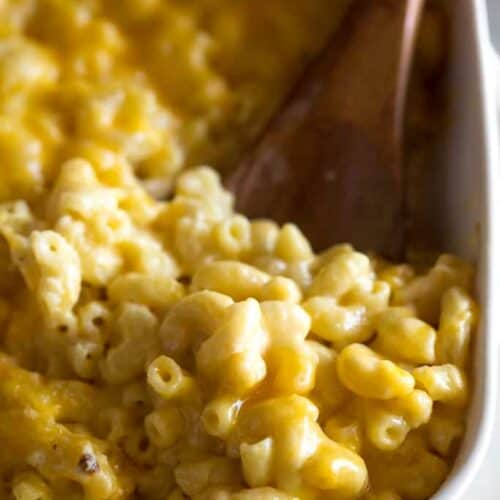

Homemade Mac and Cheese

Description
Classic Homemade Mac and Cheese made with bite-size pasta, cheddar cheese, and a simple creamy sauce all baked to perfection in the oven.
Ingredients
- 1/2 lb uncooked elbow macaroni, about 1 1/2 cups
- 3 tablespoons butter
- 2 tablespoons all-purpose flour
- 1/2 teaspoon salt
- 1/8 teaspoon ground black pepper
- 1 1/2 cup milk
- 3/4 cup half and half
- 2 1/2 cups shredded cheddar cheese
Instructions
- Preheat the oven to 325 degrees and lightly grease a square baking dish.
- Cook the macaroni to al dente, according to package instructions. Drain and set aside.
- Melt the butter in a medium saucepan over medium heat. Blend in the flour, salt, and pepper. Cook for 2 minutes.
- Slowly add the milk and half and half, stirring constantly, and cook over medium-low heat for a few minutes until the mixture is just barely thickened. Remove from heat and stir in 1 cup shredded cheese, stirring just until melted.
- Add the cooked macaroni noodles and toss to coat. Pour half or the pasta mixture into the prepared baking dish. Sprinkle ½ cup cheese over the top. Add remaining pasta and sprinkle with remaining cheese.
- Bake for 15-20 minutes or until cheese is melted on top.
- Serve with your favorite vegetable or a side salad.
Back to Recipes